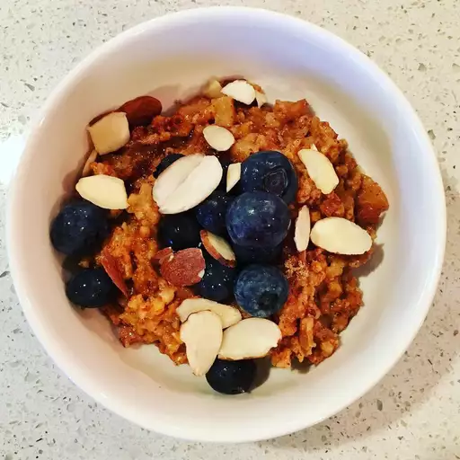

Slow Cooker Oats

These hearty steel-cut oats in the crockpot are so easy. I just can't get up in the morning to make breakfast for my husband before he leaves for work, so I put this in the slow cooker the night before, and when he wakes up, breakfast is served!
Ingredients
- 3 ½ cups water
- 1 cup steel-cut oats
- 1 cup peeled and chopped apple
- ½ cup raisins
- 2 tablespoons butter
- 2 tablespoons brown sugar
- 1 tablespoon ground cinnamon
- 1 teaspoon vanilla extract
Steps to make it
- Combine water, steel-cut oats, apple, raisins, butter, brown sugar, cinnamon, and vanilla in a slow cooker; stir until well combined and sugar is dissolved. Cover and cook on Low until oats are tender and creamy, 6 to 7 hours. For a softer texture, cook for 8 hours.
Tips
Make sure you use steel-cut oats (not rolled oats!) or this will be a mushy mess.
If your slow cooker runs hot, cook on the Warm setting instead of Low.